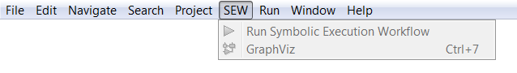

SEW Menu
For the exploitation of XLIA models, the EFM Project provides 2 shortcut actions in the SEW (Symbolic Execution Workflow) Menu available on Eclipse's menu bar :
- the "GraphViz" action that launches the graph visualization tool on a ".gv" graph file that is selected on the "Project Explorer"
- the "Run SEW" action that launches the symbolic execution defined on a ".favm" precompiled SEW file that is selected on the "Project Explorer"

This menu is also accessible trough the SEW icon below (downward pointing arrow). Moreover, when clicking on this icon :
- if a ".gv" graph file is selected on the "Project Explorer", this will launch the graph visualization tool
- if a ".favm" precompiled SEW file is selected on the "Project Explorer", this will launch the corresponding symbolic execution